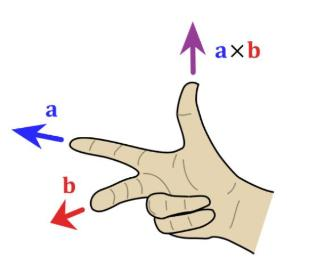
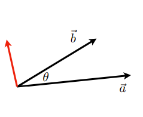
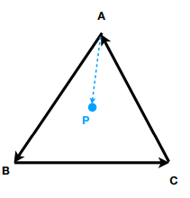

Games101笔记|概述和线性代数
本文是games101课程的第1，2课的相关笔记。这两课的内容比较基础，大学中有线性代数的学习经验就相对非常容易理解。
1. 计算机图形学概述
计算机图形学（Computer Graphics，CG）是研究计算机在硬件和软件的帮助下创建计算机图形的学科，是计算机科学的一个分支领域，主要关注数字合成与操作视觉的图形内容。简单的说它与计算机视觉（Computer Vision，CV）的区别就是，CG是通过几何图形等构建物体，而CV则是让计算机理解捕捉到的画面，理解物体是什么，CV具有一定的推测性。
1.1 相关应用
图形学目前已经被广泛应用到各行各业，常见的有电影特效制作、数据可视化、虚拟现实、模拟（Simulation，也可称为仿真）等。
1.2 基础知识
- 图形与图像
图象纯指就计算机内以位图(Bitmap)形式存在的灰度信息 图形含有几何属性，更强调场景的几何表示，是由场景的几何模型和景物的物理属性共同组成 图形主要分为两类：
- 基于线条信息表示
- 明暗图(Shading)
- 三维几何建模
要在计算机中表示一个三维物体，首先要有它的几何模型表达。因此，三维模型的建模是计算机图形学的基础，是其他内容的前提。表达一个几何物体可以是用数学上的样条函数或隐式函数来表达；也可以是用光滑曲面上的采样点及其连接关系所表达的三角网格来表达（即连续曲面的分片线性逼近），如下图所示。
在对三维几何模型的构建过程中，还会涉及到很多需要处理的几何问题，比如数据去噪(denoising or smoothing)、补洞(repairing)、简化(simplification)、层次细节(level of detail)、参数化(parameterization)、变形(deformation or editing)、分割(segmentation)、形状分析及检索(shape analysis and retrieval)等。这些问题构成“数字几何处理”的主要研究内容。
- 渲染
上个世纪80-90年代研究的比较多些，包含了大量的渲染模型，包括局部光照模型(Local Illumination Model)、光线跟踪算法(Ray Tracing)、辐射度(Radiosity)等，以及到后面的更为复杂、真实、快速的渲染技术，比如全局光照模型(Global Illumination Model)、Photo mapping、BTF、BRDF、以及基于GPU的渲染技术等。 现在的渲染技术已经能够将各种物体，包括皮肤、树木、花草、水、烟雾、毛发等渲染得非常逼真。一些商业化软件（比如Maya, Blender, Pov Ray等）也提供了强大的真实感渲染功能，在计算机图形学研究论文中作图中要经常用到这些工具来渲染漂亮的展示图或结果图。 然而，已知的渲染实现方法，仍无法实现复杂的视觉特效，离实时的高真实感渲染还有很大差距，比如完整地实现适于电影渲染（高真实感、高分辨率）制作的RenderMan标准，以及其他各类基于物理真实感的实时渲染算法等。因此，如何充分利用GPU的计算特性，结合分布式的集群技术，从而来构造低功耗的渲染服务是发展趋势之一。
- 动画(Animation)
动画是采用连续播放静止图像的方法产生物体运动的效果。计算机动画借助于编程或动画制作软件生成一系列的景物画面，是计算机图形学的研究热点之一。研究方向包括：人体动画，关节动画，运动动画，脚本动画，具有人的意识的虚拟角色的动画系统等。另外，高度物理真实感的动态模拟，包括对各种形变、水、气、云、烟雾、燃烧、爆炸、撕裂、老化等物理现象的真实模拟，也是动画领域的主要问题。这些技术是各类动态仿真应用的核心技术，可以极大地提高虚拟现实系统的沉浸感。计算机动画的应用领域广泛，比如动画片制作，广告、电影特技，训练模拟，物理仿真，游戏等。
2. 线性代数
2.1 向量(Vectors)
- 有序实数组，用以表示在不同坐标轴上的投影长度
- 有行和列两种表达方式，图形学中一般以列向量的形式表示
- 代表了一个有方向的长度
- 基本运算：
- 加法（满足结合律和交换律）
- 标量乘以向量（满足结合律和分配率）
- 点乘（内积，结果为标量，满足分配率和交换律，可用于判断两向量夹角，求向量长度，计算投影等）
- 叉乘（外积，结果为向量，垂直于原向量构建的平面，长度为 $ \vec a \times \vec b = \left | a \right | \left | b \right | \sin\left \langle a,b \right \rangle $，交换叉乘中两向量的位置，会得到长度相同但方向相反的向量）
- 向量归一化：p的归一化向量q与p方向相同，长度为1，可通过点乘算出。
2.2 向量的叉乘
向量的点乘比较容易理解，而且求解的形式也很简单，得到的结果是一个标量，也不需要考虑方向。相比向量的叉乘就复杂一些了。
叉乘正交于两个原始向量，即垂直于两个原始向量构成的平面，方向遵循右手法则。

需要说明的是：一般默认是右手法则，$\vec x \times \vec y = + \vec z$ ,但是OpenGL默认是左手法则，$\vec x \times \vec y = - \vec z$
2.3 点乘和叉乘在图形学中的应用
点乘可以用于两个向量的夹角，比如，光源与物体表面夹角的余弦值。也可以求一个向量在另一个方向上的投影。 因为叉乘的的结果带有方向，所以可以用这个特性来求两个向量的方向关系，在左还是在右。

如上图所示, 两个向量进行叉乘，比如：$\vec a \times \vec b > 0$，所以，$\vec a$ 在$\vec b$ 的顺时针方向（右边）；$\vec b \times \vec a < 0$,所以，$\vec b$在$\vec a$ 的逆时针方向（左边），如果$\vec a \times \vec b = 0$，那么$\vec a$则与$\vec b$共线。利用这个左右关系就可以确定平面上的点在三角形的内部还是外部。

如上图，若P点在三角形内部，则从同一个端点出发的边，$\vec AB$与到P点的向量$\vec AP$, 可以确定P点在$\vec AB$的左边还是右边。按此顺序判断（即边向量顺序连接），则P点只会在三条边的同一个方向；若在外部，P点相对于三个边的位置将不在同一边。
2.4 矩阵
图形学中，矩阵广泛用于变换（旋转、剪切、缩放等）。 矩阵的基本运算:
- 加法
- 乘法 - 要符合行列的限制。
- 转置
- 取逆 - 矩阵必须为方阵。
- 行列式 - 矩阵必须为方阵。
- 特征值 向量
- 跟矩阵相乘后方向不会改变的向量。
- 不是左右矩阵都有特征向量。
- 特征值 - 特征向量在相乘后长度的变化比例。
- 对称矩阵的特征值分解。
- 对称矩阵的特征值分解和非堆成矩阵的特征值分解。
- 将对称矩阵分解成更加简单的矩阵。
- 非对称矩阵的特征值分解 - 奇异值分解(SVD)
- 对非对称矩阵的特征值分解和非堆成矩阵的特征值分解。
- 将非对称矩阵分解成更加简单的矩阵。
矩阵的种类
- 对角矩阵 - 除了对角线上的元素，其余元素都为零。
- 对称矩阵 - 矩阵转置和未转置相等。
- 正交矩阵
- 且行列式的值为 1，或 -1.
- 矩阵中每一个行/列向量长度为1，且都互相垂直。
- 转置就是矩阵的逆
- 原文作者：Binean
- 原文链接：https://bzhou830.github.io/post/20200206Games101_01/
- 版权声明：本作品采用知识共享署名-非商业性使用-禁止演绎 4.0 国际许可协议进行许可，非商业转载请注明出处（作者，原文链接），商业转载请联系作者获得授权。